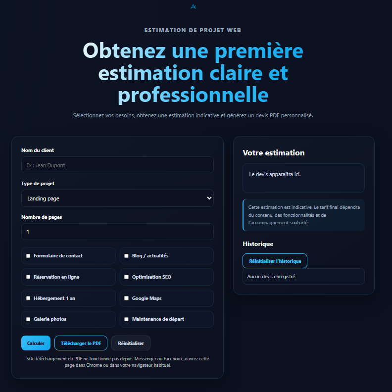

Calculateur de devis interactif

Ce projet est un outil interactif développé en JavaScript permettant d'obtenir une estimation de projet web en fonction de plusieurs critères.
Objectif du projet
L'objectif était de créer un outil simple et intuitif permettant à un futur client d'obtenir une première estimation de son projet avant une prise de contact.
Fonctionnalités principales
Calcul dynamique
Le prix évolue automatiquement selon le type de projet, le nombre de pages et les options sélectionnées.
Historique local
Les estimations peuvent être conservées dans le navigateur grâce au localStorage.
Génération PDF
L’utilisateur peut télécharger un devis PDF clair et personnalisé directement depuis l’outil.
Interface responsive
L’outil est pensé pour rester utilisable sur ordinateur, tablette et smartphone.
Technologies utilisées
Ce que j'ai appris
Ce projet m'a permis d'approfondir la manipulation du DOM, la gestion des événements, l'utilisation du localStorage pour conserver des données dans le navigateur et la génération de documents PDF avec JavaScript.
J'ai également travaillé sur l'expérience utilisateur, la validation des champs, l'organisation du code et l'adaptation de l'interface aux différents formats d'écran.
Défis rencontrés
- Mettre à jour automatiquement le prix en fonction des options sélectionnées.
- Conserver l'historique des estimations grâce au localStorage.
- Générer un document PDF clair et lisible avec jsPDF.
- Adapter l'interface aux ordinateurs, tablettes et smartphones.
Conclusion
Ce projet représente une étape importante dans mon apprentissage du développement web et du JavaScript. Il m'a permis de combiner logique, expérience utilisateur et automatisation dans un outil concret pouvant répondre à un besoin réel.
C'est également le premier projet de mon portfolio intégrant la génération de PDF, la sauvegarde de données dans le navigateur et plusieurs interactions dynamiques.